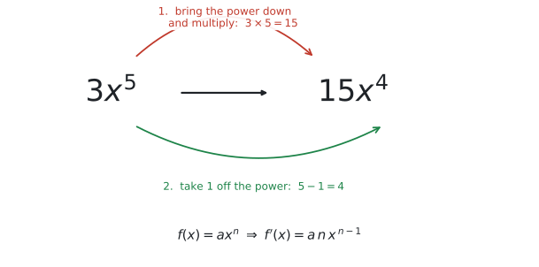
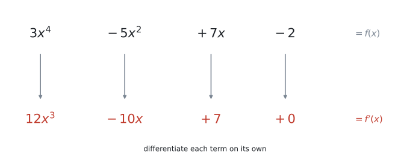
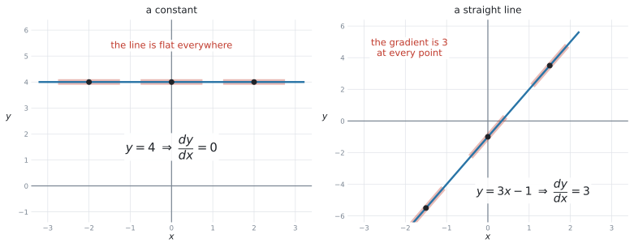
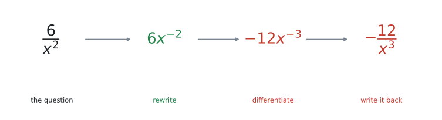
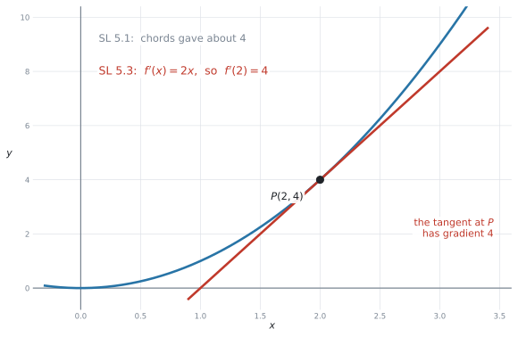

SL 5.3 — Differentiation（微分の計算：べき乗の公式）
- \(f(x) = ax^{n}\) の導関数を、公式で求められる。
- 項がいくつあっても、項ごとに微分できる。
- 定数の微分が \(0\)、\(ax\) の微分が \(a\) だと分かる。
- \(\dfrac{6}{x^{2}}\) のような分数を \(6x^{-2}\) に書き直してから微分できる。
- \(f'(a)\) の値を求められる（＝その点での接線の傾き）。
- \(f'(x) = 0\) を解いて、接線が水平になる \(x\) を求められる。
- 文脈のある問題で、\(f'(x)\) の意味を単位を付けて説明できる。
公式集の SL 5.3 の欄には、次の1行があります。
\[ f(x) = x^{n} \ \Rightarrow \ f'(x) = nx^{\,n-1} \tag{1}\]
公式集の式には、係数 \(a\) が付いていません。 ところがシラバスの Content 欄は、係数付きで書いています。
Derivative of \(f(x) = ax^{n}\) is \(f'(x) = anx^{\,n-1}\), \(n \in \mathbb{Z}\)
試験に出るのは \(3x^{5}\) のように係数の付いた形です。ですから、覚えるのはこちらにしてください。
\[ f(x) = ax^{n} \ \Rightarrow \ f'(x) = a\,n\,x^{\,n-1} \tag{2}\]
係数 \(a\) は、そのまま前に残ります。 公式集を見ながら \(a\) を落とす、というのがこの項目で一番多い失点です。
The idea
SL 5.1 では、導関数を弦の傾きの極限として見ました。表やグラフから「だいたい \(4\) くらい」と見積もる項目でした。
この項目からは、式で、正確に求めます。
1. べき乗の公式：下ろして、1 減らす
使う公式は、これ 1 本だけです。
\[ f(x) = a x^{n} \ \Rightarrow \ f'(x) = a\,n\,x^{\,n-1} \]
やることは、いつも同じ 2 手です。
- 指数を前に下ろして掛ける
- 指数から \(1\) を引く

図 1 では \(3x^{5}\) を微分しています。
- 指数 \(5\) を下ろして、\(3 \times 5 = 15\)
- 指数を \(1\) 減らして、\(5 - 1 = 4\)
\[ f(x) = 3x^{5} \ \Rightarrow \ f'(x) = 15x^{4} \]
「下ろして掛ける、1 減らす」
\(x^{7} \to 7x^{6}\)、\(5x^{3} \to 15x^{2}\)、\(2x^{10} \to 20x^{9}\)。手が覚えるまで、この 2 手を繰り返してください。
2. 項ごとに微分します
シラバスの Guidance 欄は、出題される形をこう書いています。
The derivative of functions of the form \(f(x) = ax^{n} + bx^{n-1} + \ldots\) where all exponents are integers.
項が並んでいるだけです。足し算・引き算でつながった式は、1 つずつ別々に微分して、そのままつなげます。

図 2 を、左から順に確かめてください。
| \(f(x)\) の項 | どうするか | \(f'(x)\) の項 |
|---|---|---|
| \(3x^{4}\) | \(4\) を下ろして \(3 \times 4 = 12\)、指数は \(3\) | \(12x^{3}\) |
| \(-5x^{2}\) | \(2\) を下ろして \(-5 \times 2 = -10\)、指数は \(1\) | \(-10x\) |
| \(+7x\) | \(x = x^{1}\) なので \(7 \times 1 = 7\)、指数は \(0\) | \(+7\) |
| \(-2\) | 定数は消える | \(0\) |
\[ f(x) = 3x^{4} - 5x^{2} + 7x - 2 \ \Rightarrow \ f'(x) = 12x^{3} - 10x + 7 \]
\(-5x^{2}\) を微分すると \(-10x\) です。マイナスは消えません。
\(f(x)\) を書き写すときに、\(-5x^{2}\) を「\(5x^{2}\)」と写してしまう人がいます。まず式を正しく写す、それだけで防げます。
3. 定数と 1 次式は、覚えてしまってください
この 2 つは公式に当てはめれば出ますが、結果を覚えたほうが速いです。

| \(y\) | \(\dfrac{dy}{dx}\) | 理由 |
|---|---|---|
| \(y = 4\)（定数） | \(0\) | グラフが水平だから |
| \(y = 3x - 1\)（1 次式） | \(3\) | 直線の傾きはどこでも同じだから |
| \(y = ax + b\) | \(a\) | 同じ理由 |
図 3 の左は \(y = 4\) です。どの点で接線を引いても水平なので、傾きは \(0\)。
右は \(y = 3x - 1\) です。直線ですから、接線はその直線自身です。だから傾きはどこでも \(3\)。SL 2.1 で見た「直線の傾き」と、同じものです。
2 節の形にそろえて書くと、こうなります。
\[ y = 4 \ \Rightarrow \ \frac{dy}{dx} = 0 \]
\[ y = 3x - 1 \ \Rightarrow \ \frac{dy}{dx} = 3 \]
定数が消えるので、つられて \(7x\) まで消してしまう誤りが多いところです。
消えるのは、\(x\) が付いていない項だけです。\(7x\) には \(x\) が付いています。微分すると \(7\) が残ります。
\[ 7x \to 7 \qquad ✓ \qquad\qquad 7x \to 0 \qquad ✗ \]
4. \(n\) は整数です ── 分数は書き直します
シラバスの条件は \(n \in \mathbb{Z}\)（\(n\) は整数）です。これは 2 つのことを意味します。
- 負の指数は出ます。 \(x^{-2}\) は範囲内です。
- 分数の指数は出ません。 \(\sqrt{x} = x^{\frac{1}{2}}\) は AI SL の範囲外です。
\(\dfrac{6}{x^{2}}\) のような形は、そのままでは公式が使えません。まず \(6x^{-2}\) に書き直します。

図 4 の 4 ステップです。
- 書き直す：\(\dfrac{6}{x^{2}} = 6x^{-2}\)（SL 1.5 の \(a^{-n} = \dfrac{1}{a^{n}}\)）
- 下ろして掛ける：\(6 \times (-2) = -12\)
- 1 減らす：\(-2 - 1 = -3\)
- 戻す：\(-12x^{-3} = -\dfrac{12}{x^{3}}\)
\[ y = \frac{6}{x^{2}} \ \Rightarrow \ \frac{dy}{dx} = -\frac{12}{x^{3}} \]
\(-2\) から \(1\) を引くと \(-3\) です。\(-1\) ではありません。
数直線の上で、\(-2\) から左へ 1 つ動くと思ってください。\(-2 \to -3\) です。
\[ -2 - 1 = -3 \qquad ✓ \qquad\qquad -2 - 1 = -1 \qquad ✗ \]
指数が負のときだけ起こる、しかしとても多い誤りです。
問題が \(\dfrac{6}{x^{2}}\) と分数で出てきたら、答えも \(-\dfrac{12}{x^{3}}\) と分数で書くのが自然です。
\(-12x^{-3}\) のままでも構いませんが、分数に戻しておくと採点者にも自分にも読みやすくなります。
5. \(f'(a)\) は「その点での傾き」です
\(f'(x)\) は式です。そこに数を入れると、その点での接線の傾きという数になります。
\(f(x) = x^{2}\) で考えます。
\[ f'(x) = 2x \quad \Rightarrow \quad f'(2) = 4, \qquad f'(-3) = -6, \qquad f'(0) = 0 \]

図 5 を見てください。SL 5.1 では、\(x = 2\) のまわりの弦の傾きが \(4\) に近づいていくのを見ました。「だいたい 4」でした。
いま、公式は ちょうど \(4\) と答えます。同じ答えに、別の道から着いたわけです。
\(f(x) = x^{2}\) のとき、
- \(f(2) = 4\) … \(y\) 座標（点の高さ）
- \(f'(2) = 4\) … 傾き
たまたま両方 \(4\) になりましたが、別のものです。\(f(3) = 9\) ですが \(f'(3) = 6\) です。
問題文にダッシュ \('\) が付いているかどうかを、指で押さえて確かめてください。
6. \(f'(x) = 0\) を解くと、水平な場所が出ます
SL 5.2 では、\(f'(x) = 0\) となる \(x\) が増加と減少の区切りになることを見ました。あのときは電卓でグラフを描いて探しました。
いまは、式を作って解けます。
\[ f(x) = x^{3} - 6x^{2} + 5 \ \Rightarrow \ f'(x) = 3x^{2} - 12x \]
\[ 3x^{2} - 12x = 0 \quad \Rightarrow \quad 3x(x - 4) = 0 \quad \Rightarrow \quad x = 0 \ \text{または} \ x = 4 \]
\(3x^{2} - 12x\) には \(3x\) が共通しています。共通因数でくくるだけで解けることが、とても多いです。
因数分解できないときは、電卓（nSolve または polyRoots）を使ってかまいません。AI では両方の試験で電卓が使えます。
この続き ── 接線の式を作る、最大・最小を求める ── は SL 5.4 と SL 5.6 です。この項目の公式が、その全部の土台になります。
Why it works
なぜ「下ろして、1 減らす」で傾きが出るのかを、\(f(x) = x^{2}\) で確かめます。
SL 5.1 の弦の傾きを、文字のまま計算します。\(x\) と、そこから少し離れた \(x + h\) の 2 点を結びます。
\[ \text{弦の傾き} = \frac{f(x + h) - f(x)}{(x + h) - x} = \frac{(x + h)^{2} - x^{2}}{h} \]
分子を展開します。
\[ (x + h)^{2} - x^{2} = x^{2} + 2xh + h^{2} - x^{2} = 2xh + h^{2} = h(2x + h) \]
\(h\) で約分できます。
\[ \text{弦の傾き} = \frac{h(2x + h)}{h} = 2x + h \]
ここで \(h\) を \(0\) に近づけます（\(h \to 0\)）。残るのは
\[ f'(x) = 2x . \]
指数の \(2\) が前に下りてきて、指数が \(1\) 減りました。 公式のとおりです。
同じ計算を \(x^{3}\)、\(x^{4}\)、… と続けても、毎回いちばん前に出てくるのが \(nx^{\,n-1}\) です。だから、この 2 手が「どんな \(n\) でも」通用します。
この展開と約分は、試験で書く必要はありません。 AI SL のシラバスは Not required: Formal analytic methods と書いています（SL 5.1）。
公式を使えれば十分です。 ここを読むのは、「なぜ？」が気になる人のためのおまけです。
Worked examples
問題文は英語です。意味が理解できなかったら、問題文の下の「日本語訳」を開いてください。解説は日本語です。
例題 1 The function \(f\) is given by \(f(x) = 3x^{4} - 5x^{2} + 7x - 2\).
(a) Find \(f'(x)\).
(b) Find \(f'(2)\).
日本語訳
関数 \(f\) が \(f(x) = 3x^{4} - 5x^{2} + 7x - 2\) で与えられています。
(a) \(f'(x)\) を求めなさい。
(b) \(f'(2)\) を求めなさい。
(a) 項ごとに微分します。
\[ f'(x) = 12x^{3} - 10x + 7 \]
(b) \(x = 2\) を代入します。
\[ f'(2) = 12(2)^{3} - 10(2) + 7 = 12(8) - 20 + 7 = 96 - 20 + 7 = 83 \]
試験ではこう書く
(a) \(f'(x) = 12x^{3} - 10x + 7\)
(b) \(f'(2) = 96 - 20 + 7 = 83\)
\(96 - 20 + 7\) という行があると、答えが違っていても計算の途中まで点がもらえます（method mark）。
いきなり \(83\) とだけ書くと、間違えたときに \(0\) 点になります。
(a) \(f'(x) = 12x^{3} - 10x + 7\)
(b) \(f'(2) = 83\)
例題 2 A function is given by \(h(x) = 4x^{2} + \dfrac{6}{x}\), \(x \neq 0\).
(a) Write \(h(x)\) in the form \(4x^{2} + 6x^{n}\).
(b) Find \(h'(x)\).
(c) Find the gradient of the graph of \(y = h(x)\) at \(x = 2\).
日本語訳
関数が \(h(x) = 4x^{2} + \dfrac{6}{x}\)（\(x \neq 0\)）で与えられています。
(a) \(h(x)\) を \(4x^{2} + 6x^{n}\) の形で書きなさい。
(b) \(h'(x)\) を求めなさい。
(c) \(x = 2\) における \(y = h(x)\) のグラフの傾きを求めなさい。
(a) \(\dfrac{6}{x} = \dfrac{6}{x^{1}} = 6x^{-1}\) です。
\[ h(x) = 4x^{2} + 6x^{-1} \]
(b) 書き直した形なら、公式がそのまま使えます。
- \(4x^{2}\) … \(4 \times 2 = 8\)、指数は \(1\) → \(8x\)
- \(6x^{-1}\) … \(6 \times (-1) = -6\)、指数は \(-1 - 1 = -2\) → \(-6x^{-2}\)
\[ h'(x) = 8x - 6x^{-2} = 8x - \frac{6}{x^{2}} \]
(c) \(x = 2\) を代入します。
\[ h'(2) = 8(2) - \frac{6}{2^{2}} = 16 - \frac{6}{4} = 16 - 1.5 = 14.5 \]
\(-1\) から \(1\) を引くので \(-2\) です。\(0\) ではありません。
負の指数のときは、必ず数直線を思い浮かべてください。
(a) \(h(x) = 4x^{2} + 6x^{-1}\)
(b) \(h'(x) = 8x - 6x^{-2} = 8x - \dfrac{6}{x^{2}}\)
(c) \(h'(2) = 16 - 1.5 = 14.5\)
例題 3 The function \(f\) is given by \(f(x) = x^{2}\).
(a) Find \(f'(x)\).
(b) Find the gradient of the tangent to the curve at the point \(P(2, 4)\).
(c) Find the value of \(x\) at which the gradient of the curve is \(-6\).
日本語訳
関数 \(f\) が \(f(x) = x^{2}\) で与えられています。
(a) \(f'(x)\) を求めなさい。
(b) 点 \(P(2, 4)\) における曲線の接線の傾きを求めなさい。
(c) 曲線の傾きが \(-6\) になる \(x\) の値を求めなさい。
(a) 指数 \(2\) を下ろして、指数を \(1\) 減らします。
\[ f'(x) = 2x \]
(b) \(P\) の \(x\) 座標は \(2\) です。
\[ f'(2) = 2(2) = 4 \]
(c) 今度は逆向きです。\(f'(x) = -6\) とおいて、\(x\) を求めます。
\[ 2x = -6 \quad \Rightarrow \quad x = -3 \]
\(P(2, 4)\) の \(4\) は \(y\) 座標です。傾きの式に入れるのは \(x\) 座標の \(2\) だけです。
\(f'(4) = 8\) としてしまうのが、よくある誤りです。
「傾きが \(-6\) になるのはどこか」と聞かれたら、\(f'(x)\) に \(= -6\) を付けて方程式にします。
\(f'(x)\) を求めて終わりにせず、問題文が「値」を聞いているのか「場所」を聞いているのかを読んでください。
(a) \(f'(x) = 2x\)
(b) \(f'(2) = 4\)
(c) \(2x = -6\), so \(x = -3\)
例題 4 The function \(f\) is given by \(f(x) = x^{3} - 6x^{2} + 5\).
(a) Find \(f'(x)\).
(b) Solve \(f'(x) = 0\).
(c) State the interval on which \(f\) is decreasing.
日本語訳
関数 \(f\) が \(f(x) = x^{3} - 6x^{2} + 5\) で与えられています。
(a) \(f'(x)\) を求めなさい。
(b) \(f'(x) = 0\) を解きなさい。
(c) \(f\) が減少する区間を書きなさい。
(a) 項ごとに。定数 \(+5\) は消えます。
\[ f'(x) = 3x^{2} - 12x \]
\[ 3x^{2} - 12x = 0 \quad \Rightarrow \quad 3x(x - 4) = 0 \quad \Rightarrow \quad x = 0 \ \text{または} \ x = 4 \]
(c) 区切りは \(x = 0\) と \(x = 4\) です。あいだの \(x = 1\) で符号を調べます。
\[ f'(1) = 3(1)^{2} - 12(1) = 3 - 12 = -9 < 0 \]
負なので、この区間では減少しています（SL 5.2）。
\[ 0 < x < 4 \]
試験ではこう書く
\(f'(1) = -9 < 0\), so \(f\) is decreasing for \(0 < x < 4\).
グラフを想像するより、区間の中の適当な数を 1 つ選んで \(f'\) に代入するほうが速くて確実です。
\(0\) と \(4\) のあいだなら、\(1\) でも \(2\) でも \(3\) でもかまいません。計算が楽な数を選んでください。
(a) \(f'(x) = 3x^{2} - 12x\)
(b) \(3x(x-4) = 0\), so \(x = 0\) and \(x = 4\)
(c) \(f'(1) = -9 < 0\), so \(f\) is decreasing for \(0 < x < 4\)
例題 5 A company sells \(x\) items per day. Its daily profit, in dollars, is modelled by
\[ P(x) = 60x - x^{2} - 200, \qquad 0 \le x \le 50 . \]
(a) Find \(\dfrac{dP}{dx}\).
(b) Find the value of \(\dfrac{dP}{dx}\) when \(x = 20\), and interpret your answer in the context of the question.
(c) Find the value of \(x\) for which \(\dfrac{dP}{dx} = 0\).
日本語訳
ある会社は 1 日に \(x\) 個の品物を売ります。1 日の利益（ドル）は次の式でモデル化されます。
\[ P(x) = 60x - x^{2} - 200, \qquad 0 \le x \le 50 . \]
(a) \(\dfrac{dP}{dx}\) を求めなさい。
(b) \(x = 20\) のときの \(\dfrac{dP}{dx}\) の値を求め、問題の文脈で解釈しなさい。
(c) \(\dfrac{dP}{dx} = 0\) となる \(x\) の値を求めなさい。
(a) \(60x \to 60\)、\(-x^{2} \to -2x\)、\(-200 \to 0\)。
\[ \frac{dP}{dx} = 60 - 2x \]
(b) \(x = 20\) を代入します。
\[ \frac{dP}{dx} = 60 - 2(20) = 60 - 40 = 20 \]
単位は「ドル / 個」です（SL 5.1）。\(P\) の単位がドル、\(x\) の単位が個だからです。
試験ではこう書く
When \(20\) items are sold per day, the daily profit is increasing at about \(20\) dollars per extra item.
(c) \(60 - 2x = 0\) を解きます。
\[ 2x = 60 \quad \Rightarrow \quad x = 30 \]
- いつの話か（\(x = 20\)、\(20\) 個売っているとき）
- 増えているのか減っているのか（
increasing） - 数と単位（\(20\) dollars per item）
この 3 つが入っていれば、表現が多少ぎこちなくても点になります。
参考：\(x = 30\) は、実は利益が最大になるところです（\(P(30) = 700\) ドル）。\(\dfrac{dP}{dx} = 0\) から最大・最小を求めるのが SL 5.6 です。
(a) \(\dfrac{dP}{dx} = 60 - 2x\)
(b) \(\dfrac{dP}{dx} = 20\). When \(20\) items are sold per day, the profit is increasing at \(20\) dollars per extra item.
(c) \(60 - 2x = 0\), so \(x = 30\)
Common errors
公式集の式が \(f(x) = x^{n}\) の形なので、係数のことを忘れがちです。
\[ 3x^{5} \to 5x^{4} \qquad ✗ \qquad\qquad 3x^{5} \to 15x^{4} \qquad ✓ \]
下ろした指数は、もとの係数に「掛ける」のであって、置き換えるのではありません。
\[ 4x^{3} \to 12x^{3} \qquad ✗ \qquad\qquad 4x^{3} \to 12x^{2} \qquad ✓ \]
2 手セットです。片方だけで止まらないでください。
定数が消えるので、つられて消してしまう誤りです。\(7x = 7x^{1}\) なので、微分すると \(7\) です。
\(x\) が付いていない項だけが消えます。
\[ 3x^{2} - 4 \to 6x - 4 \qquad ✗ \qquad\qquad 3x^{2} - 4 \to 6x \qquad ✓ \]
\(-4\) は水平な直線なので、傾きは \(0\) です。答えに残してはいけません。
\(\dfrac{6}{x^{2}}\) を、分子と分母を別々に微分してはいけません。
必ず \(6x^{-2}\) に書き直してから、公式を使ってください。
\(-2 - 1 = -3\) です。\(-1\) ではありません。
\(x^{-2} \to -2x^{-3}\)、\(x^{-1} \to -x^{-2}\)。数直線で左へ 1 つと覚えてください。
「傾きを求めなさい」なら \(f'(a)\)、「\(y\) 座標を求めなさい」なら \(f(a)\) です。
問題文のダッシュ \('\) を指で押さえて確かめてください。
点 \((2, 4)\) での傾きなら、入れるのは \(2\) です。\(4\) ではありません。
\(f'\) に入れるのは、いつでも \(x\) 座標です。
\(\sqrt{x} = x^{\frac{1}{2}}\) は整数の指数ではないので、AI SL の範囲外です（\(n \in \mathbb{Z}\)）。
シラバスが \(n \in \mathbb{Z}\) と限っているので、微分する式に出てくることはありません。出てきたら、問題を読み違えている可能性が高いです。
Solve f'(x) = 0 と書かれていたら、答えは \(x\) の値だけです。
\(y\) 座標まで必要なのは、coordinates（座標）と書かれているときです。SL 5.6 でよく出ます。
\(3x^{2} - 12x = 0\) は、\(3x(x-4) = 0\) とくくれば、そのまま解けます。
解の公式を持ち出す前に、共通因数がないかを必ず見てください。
Using your GDC (TI-Nspire CX II)
この項目は、手で計算する項目です。電卓は答え合わせに使ってください。
1. CAS でない機種は、式を出してくれません
TI-Nspire CX II（CAS でない機種）は、\(f'(x)\) の式を返しません。返すのは、ある 1 点での値だけです。
つまり、\(12x^{3} - 10x + 7\) のような式そのものは、必ず自分で書きます。
2. ある点での値を確かめる
menu → 4: Calculus → 1: Numerical Derivative at a PointSL 5.1 で使ったものと同じ機能です。
\(f(x) = 3x^{4} - 5x^{2} + 7x - 2\)、\(x = 2\) を指定すると \(83\) と返ります。例 1 の答えと一致しました ✓
- 手で \(f'(x)\) を求める
- 適当な \(x\)（\(x = 2\) など）を自分の式に代入する
- 同じ \(x\) で電卓の値を出す
- 一致すれば、式が合っている可能性がとても高い
\(1\) 点で合っていれば、係数の落としや指数の引き忘れは、まず起きていません。
3. \(f'(x) = 0\) を解く
自分で作った \(f'(x)\) の式を、nSolve に入れます。
nSolve(3x² - 12x = 0, x, -1, 1)
nSolve(3x² - 12x = 0, x, 2, 6)nSolve は解を 1 つずつ返すので、解が 2 つあるときは範囲を変えて 2 回使います（SL 5.2 と同じです）。
\(f'(x)\) が 2 次式なら、polyRoots を使う手もあります。
polyRoots(3x² - 12x, x)4. グラフでも確かめられます
Graphs ページで \(f1(x)\) に \(f(x)\) を入れ、山と谷の \(x\) 座標を Analyze Graph で出します（SL 5.2）。その点をはさむように、lower bound? と upper bound? の \(2\) 回、enter を押します（→ SL 2.4）。
その \(x\) が、\(f'(x) = 0\) の解と一致するはずです。2 通りで同じ答えが出たら、まず間違いありません。
Find f'(x) は式を求めています。電卓では出せません。
Solve f'(x) = 0 でも、\(f'(x)\) の式を書いてから解いた形にしてください。式が書いていないと、途中点がもらえません。
Exercises
各問題に、折りたたみが3つ付いています。日本語訳、解答例（答案用紙に書くべきこと。英語です）、解説（なぜそうなるか。日本語です）。
まず自分で解いて、次に解答例と見くらべてください。解説は、合わなかったときだけ開けば十分です。
1 The function \(f\) is given by \(f(x) = 4x^{3} - 7x^{2} + 2x - 9\).
(a) Find \(f'(x)\).
(b) Find \(f'(1)\).
日本語訳
関数 \(f\) が \(f(x) = 4x^{3} - 7x^{2} + 2x - 9\) で与えられています。
(a) \(f'(x)\) を求めなさい。
(b) \(f'(1)\) を求めなさい。
(a) \(f'(x) = 12x^{2} - 14x + 2\)
(b) \(f'(1) = 12 - 14 + 2 = 0\)
項ごとに見ます。\(4x^{3} \to 12x^{2}\)、\(-7x^{2} \to -14x\)、\(+2x \to +2\)、\(-9 \to 0\)。
\(+2x\) が \(+2\) になることと、\(-9\) が消えることの 2 つが要点です。
(b) の答えが \(0\) になるのは、\(x = 1\) でグラフが水平だということです。
2 The function \(g\) is given by \(g(x) = 2x^{5} - 3x\).
(a) Find \(g'(x)\).
(b) Find \(g'(-1)\).
日本語訳
関数 \(g\) が \(g(x) = 2x^{5} - 3x\) で与えられています。
(a) \(g'(x)\) を求めなさい。
(b) \(g'(-1)\) を求めなさい。
(a) \(g'(x) = 10x^{4} - 3\)
(b) \(g'(-1) = 10(-1)^{4} - 3 = 10 - 3 = 7\)
\(2x^{5}\) … \(2 \times 5 = 10\)、指数は \(4\) → \(10x^{4}\)。\(-3x\) … \(x\) が付いているので \(-3\) が残ります。
(b) で \((-1)^{4} = +1\) です。指数が偶数なら正になります。\(-1\) としてしまわないでください。
3 Write down \(\dfrac{dy}{dx}\) for each of the following.
(a) \(y = 7\)
(b) \(y = 5x\)
(c) \(y = -3x + 8\)
(d) \(y = 6 - 2x\)
日本語訳
次のそれぞれについて \(\dfrac{dy}{dx}\) を書きなさい。
(a) \(\dfrac{dy}{dx} = 0\)
(b) \(\dfrac{dy}{dx} = 5\)
(c) \(\dfrac{dy}{dx} = -3\)
(d) \(\dfrac{dy}{dx} = -2\)
(d) は \(y = -2x + 6\) と並べ替えると見やすくなります。\(x\) の係数は \(-2\) です。マイナスを落とさないでください。
4 Differentiate each of the following. Give each answer as a fraction.
(a) \(y = \dfrac{4}{x}\)
(b) \(y = \dfrac{3}{x^{2}}\)
日本語訳
次のそれぞれを微分しなさい。答えは分数の形で書きなさい。
(a) \(y = 4x^{-1}\), so \(\dfrac{dy}{dx} = -4x^{-2} = -\dfrac{4}{x^{2}}\)
(b) \(y = 3x^{-2}\), so \(\dfrac{dy}{dx} = -6x^{-3} = -\dfrac{6}{x^{3}}\)
まず書き直すのが要点です。
(a) \(4 \times (-1) = -4\)、指数は \(-1 - 1 = -2\)。
(b) \(3 \times (-2) = -6\)、指数は \(-2 - 1 = -3\)。
どちらも答えがマイナスになります。\(\dfrac{4}{x}\) のグラフは（\(x > 0\) の側で）右下がりなので、傾きが負なのは自然です。
5 The function \(f\) is given by \(f(x) = x^{3} + \dfrac{2}{x} - 5\), \(x \neq 0\).
(a) Find \(f'(x)\).
(b) Find \(f'(1)\).
日本語訳
関数 \(f\) が \(f(x) = x^{3} + \dfrac{2}{x} - 5\)（\(x \neq 0\)）で与えられています。
(a) \(f'(x)\) を求めなさい。
(b) \(f'(1)\) を求めなさい。
(a) \(f(x) = x^{3} + 2x^{-1} - 5\), so \(f'(x) = 3x^{2} - 2x^{-2} = 3x^{2} - \dfrac{2}{x^{2}}\)
(b) \(f'(1) = 3 - 2 = 1\)
3 種類の項が 1 つの式に入っています。
- \(x^{3}\) … ふつうのべき乗 → \(3x^{2}\)
- \(\dfrac{2}{x} = 2x^{-1}\) … 書き直してから → \(-2x^{-2}\)
- \(-5\) … 定数 → 消える
(b) は \(x = 1\) なので、\(3(1)^{2} - \dfrac{2}{1^{2}} = 3 - 2 = 1\) です。
6 The function \(f\) is given by \(f(x) = x^{4} - 4x^{2}\).
(a) Find \(f'(x)\).
(b) Find the gradient of the curve at the point where \(x = 2\).
日本語訳
関数 \(f\) が \(f(x) = x^{4} - 4x^{2}\) で与えられています。
(a) \(f'(x)\) を求めなさい。
(b) \(x = 2\) の点における曲線の傾きを求めなさい。
(a) \(f'(x) = 4x^{3} - 8x\)
(b) \(f'(2) = 4(8) - 8(2) = 32 - 16 = 16\)
\(-4x^{2}\) … \(-4 \times 2 = -8\)、指数は \(1\) → \(-8x\)。マイナスはそのまま残ります。
(b) で \(4(2)^{3} = 4 \times 8 = 32\) です。\((4 \times 2)^{3}\) ではありません。指数が先、掛け算はあとです。
7 The function \(f\) is given by \(f(x) = x^{3} - 12x + 1\).
(a) Find \(f'(x)\).
(b) Solve \(f'(x) = 0\).
日本語訳
関数 \(f\) が \(f(x) = x^{3} - 12x + 1\) で与えられています。
(a) \(f'(x)\) を求めなさい。
(b) \(f'(x) = 0\) を解きなさい。
(a) \(f'(x) = 3x^{2} - 12\)
(b) \(3x^{2} - 12 = 0\), so \(x^{2} = 4\), so \(x = 2\) and \(x = -2\)
答えが 2 つあります。 \(x^{2} = 4\) の解は \(x = 2\) と \(x = -2\) です。
\(x = 2\) だけ書いて終わりにする誤りが、とても多いところです。平方根を取ったら、\(\pm\) を忘れないでください。
\(3(x-2)(x+2) = 0\) と因数分解しても同じです。
8 The function \(f\) is given by \(f(x) = 2x^{3} - 9x^{2} + 12x\).
(a) Find \(f'(x)\).
(b) Show that \(f'(x) = 6(x - 1)(x - 2)\).
(c) Write down the values of \(x\) for which the tangent to the curve is horizontal.
日本語訳
関数 \(f\) が \(f(x) = 2x^{3} - 9x^{2} + 12x\) で与えられています。
(a) \(f'(x)\) を求めなさい。
(b) \(f'(x) = 6(x - 1)(x - 2)\) となることを示しなさい。
(c) 曲線の接線が水平になる \(x\) の値を書きなさい。
(a) \(f'(x) = 6x^{2} - 18x + 12\)
(b) \(6(x-1)(x-2) = 6(x^{2} - 3x + 2) = 6x^{2} - 18x + 12\) ✓
(c) \(x = 1\) and \(x = 2\)
(b) の Show that は、与えられた形から出発して展開し、(a) と同じになることを示すのが確実です。
因数分解する向きよりも、展開する向きのほうが計算が楽です。
(c) 「接線が水平」は \(f'(x) = 0\) のことです。(b) の形なら、\(x = 1\) と \(x = 2\) がすぐ読めます。
9 A curve has equation \(y = x^{2}(x - 3)\).
(a) Expand the brackets to write \(y\) as a polynomial.
(b) Find \(\dfrac{dy}{dx}\).
(c) Find the values of \(x\) for which \(\dfrac{dy}{dx} = 0\).
日本語訳
ある曲線の方程式は \(y = x^{2}(x - 3)\) です。
(a) かっこを展開して、\(y\) を多項式で書きなさい。
(b) \(\dfrac{dy}{dx}\) を求めなさい。
(c) \(\dfrac{dy}{dx} = 0\) となる \(x\) の値を求めなさい。
(a) \(y = x^{3} - 3x^{2}\)
(b) \(\dfrac{dy}{dx} = 3x^{2} - 6x\)
(c) \(3x(x - 2) = 0\), so \(x = 0\) and \(x = 2\)
かっこのまま微分することはできません。 AI SL の公式は、\(ax^{n}\) の形が並んでいるときにしか使えません。
必ず展開してから微分してください。\(x^{2} \times x = x^{3}\)、\(x^{2} \times (-3) = -3x^{2}\) です。
(c) は共通因数 \(3x\) でくくります。\(x = 0\) を忘れないでください（\(3x = 0\) からの解です）。
10 The cost, in dollars, of producing \(n\) chairs per day is modelled by
\[ C(n) = 0.5n^{2} + 20n + 300, \qquad 0 \le n \le 60 . \]
(a) Find \(\dfrac{dC}{dn}\).
(b) Find the value of \(\dfrac{dC}{dn}\) when \(n = 40\).
(c) Interpret your answer to part (b) in the context of the question.
日本語訳
1 日に \(n\) 脚のいすを作るときの費用（ドル）は、次の式でモデル化されます。
\[ C(n) = 0.5n^{2} + 20n + 300, \qquad 0 \le n \le 60 . \]
(a) \(\dfrac{dC}{dn}\) を求めなさい。
(b) \(n = 40\) のときの \(\dfrac{dC}{dn}\) の値を求めなさい。
(c) (b) の答えを、問題の文脈で解釈しなさい。
(a) \(\dfrac{dC}{dn} = n + 20\)
(b) \(\dfrac{dC}{dn} = 40 + 20 = 60\)
(c) When \(40\) chairs are made per day, the cost is increasing at about \(60\) dollars per extra chair.
(a) \(0.5n^{2}\) … \(0.5 \times 2 = 1\)、指数は \(1\) → \(n\)。係数が \(1\) になるので、\(1n\) ではなく \(n\) と書きます。
\(20n \to 20\)、\(300 \to 0\) です。
(c) 単位は「ドル / 脚」です。increasing と単位の両方を入れてください。
参考：実際に \(41\) 脚にすると費用は \(60.5\) ドル増えます。\(60\) は、そのとても近い見積もりです。
11 The function \(f\) is given by \(f(x) = x^{3} - 3x^{2} - 9x + 5\).
(a) Find \(f'(x)\).
(b) Show that \(f'(x) = 3(x - 3)(x + 1)\).
(c) Hence write down the values of \(x\) for which \(f'(x) = 0\).
(d) State the interval on which \(f\) is decreasing.
日本語訳
関数 \(f\) が \(f(x) = x^{3} - 3x^{2} - 9x + 5\) で与えられています。
(a) \(f'(x)\) を求めなさい。
(b) \(f'(x) = 3(x - 3)(x + 1)\) となることを示しなさい。
(c) これを用いて、\(f'(x) = 0\) となる \(x\) の値を書きなさい。
(d) \(f\) が減少する区間を書きなさい。
(a) \(f'(x) = 3x^{2} - 6x - 9\)
(b) \(3(x-3)(x+1) = 3(x^{2} - 2x - 3) = 3x^{2} - 6x - 9\) ✓
(c) \(x = 3\) and \(x = -1\)
(d) \(f'(0) = -9 < 0\), so \(f\) is decreasing for \(-1 < x < 3\)
この関数は SL 5.2 の演習 6 と同じものです。あのときは電卓でグラフを描いて、最大点 \((-1, 10)\) と最小点 \((3, -22)\) を読みました。
いまは、電卓なしで \(x = -1\) と \(x = 3\) が出せます。 同じ答えに、式から着きました ✓
(d) は、あいだの値 \(x = 0\) を入れて符号を確かめます。\(f'(0) = -9 < 0\) なので減少です。
答えに \(y\) 座標（\(10\) や \(-22\)）は入りません。 区間は \(x\) の範囲です。